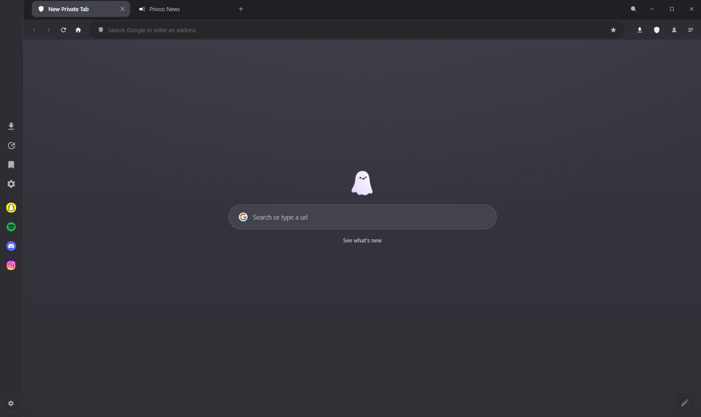
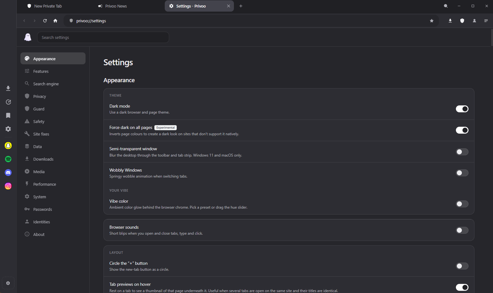

Ads and trackers are blocked from the very first tab. Everything you do stays on your own machine, because there is no account to make and no server to sync to.
Free and MIT licensed. No account. No telemetry.

Most browsers ship the protections and leave them switched off. Privoo turns them on before you open the first tab. There is nothing to opt out of, because there is nothing collecting anything.
EasyList, EasyPrivacy and the uBlock Origin lists, enforced before a request ever leaves the machine. Pages load less, so they load faster. The speed is a side effect of the blocking rather than a separate feature.
History, bookmarks, passwords, AI conversations and settings are all files on your own disk. There is no Privoo account, no sync service and no analytics endpoint, so there is nowhere for any of it to go.
Deterministic canvas noise, a normalised user agent, WebRTC leak protection, encrypted DNS, and tracking parameters stripped out of links before you follow them.
Privacy is the reason to switch. The tab strip is the reason to stay.
Nine tabs on the same site all say the same thing. Privoo gives you five ways out of that, and none of them involve clicking through them one at a time.

Nothing in Settings needs turning on to be private. The blocking, the HTTPS upgrades, the encrypted DNS and the fingerprint protection are all running before you open the first tab. The page is there for changing your mind, not for switching privacy on.

Privoo AI runs against whichever provider you already pay for, be that Anthropic, OpenAI, Gemini or DeepSeek. It will also run against a model on your own machine through Ollama, in which case nothing leaves it at all. Privoo is never in the middle, and your key is encrypted on disk.
.mariana turns a directory on your computer into a website reachable over the Tor network. No server, no domain, no port forwarding. The browser is the host, and it stops when you close it.
Every browser makes this list. Most of them only publish the left hand column. Both matter, so both are here.
| Privoo handles | Privoo does not |
|---|---|
| Ads, trackers and third party cookies | Hide which sites you visit from your internet provider, unless you turn on the VPN or Tor |
| Fingerprinting via canvas, user agent and WebRTC | Stop a site you sign in to from knowing it is you |
| DNS queries, encrypted over HTTPS | Protect you from a compromised machine or a keylogger |
| Links that pretend to be somewhere else, when you paste them | Judge whether a site is trustworthy once you are on it |